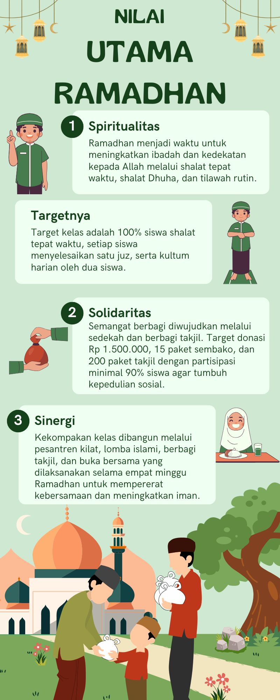

Ramadhan menjadi waktu untuk meningkatkan ibadah dan kedekatan kepada Allah melalui shalat tepat waktu, shalat Dhuha, dan tilawah rutin. Target kelas: 100% siswa shalat tepat waktu dan menyelesaikan satu juz.
Semangat berbagi diwujudkan melalui sedekah dan berbagi takjil. Target: donasi Rp 1.500.000, 15 paket sembako, dan 200 paket takjil dengan partisipasi minimal 90% siswa.
Kekompakan kelas dibangun melalui pesantren kilat, lomba islami, berbagi takjil, dan buka bersama selama empat minggu Ramadhan untuk mempererat kebersamaan.
% target partisipasi siswa
paket takjil target dibagikan
tilawah per siswa target kelas
kegiatan sinergi bersama
Ramadhan bukan hanya ritual — ada sains, data astronomis, dan riset peer-reviewed di baliknya. Semua visualisasi berbasis data nyata dari jurnal ilmiah dan lembaga terpercaya.
🎨 Tim Designer: ganti placeholder dengan foto poster Canva kalian.
Hapus <div class="poster-ph"> dan ganti dengan <img class="poster-img" src="../images/poster-1.jpg">